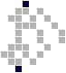
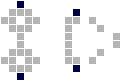

A
Puffers
A p4 c puffer of the following form, which is closely related to the accidental ship. The smallest iteration, shown below, has an initial population of 25 cells. For a full list of possible iterations, see Iteration Guides.
Later (wiki, captured 2018): A p4 c puffer of the following form. The smallest iteration, shown below, has an initial population of 25 cells. For a full list of possible iterations, see Iteration guides. Compare accidental ship.
Spaceship
The following p4 c spaceship with a minimum population of 28 cells, which is closely related to accidental puffers.
Later (wiki, captured 2018): The following p4 c spaceship with a minimum population of 28 cells. Compare accidental puffer.
Oscillator
The following p4 oscillator with a minimum population of 4 cells, which is a primary component of many other oscillators and a fairly common puffer output.
Later (wiki, captured 2018): The following p4 oscillator with a minimum population of four cells, which is a component of many other oscillators, such as the anchor track, anchor stack, buoy, and flotsam. In terms of minimum population, it ties with the lever and radar as the smallest p4 oscillator, but the lever has a smaller bounding box and average population. The only naturally occurring puffer that generates anchors is the ferry puffer, but anchors can be produced by flotillas in various ways.
Tagalongs
A c trailer of infinitely extensible size and period, formed from two tippy trailers which convert an anchor track left by a puffer into a sparse trail of checkers, which is one of few known methods of creating puffers of arbitrarily large period. The following is referred to as a 6-slot anchor biter and is extended by inserting four more pairs of dots into the anchor track before the tippy trailer.
Later (wiki, captured 2018): A c trailer of infinitely extensible size and period, formed from two tippy trailers which convert an anchor track left by a puffer into a sparse trail of checkers, which is one of few known methods of creating puffers of arbitrarily large period. The same reaction with only one tippy trailer is called a half anchor biter. The following is referred to as a six-slot anchor biter and is extended by inserting four more pairs of dots into the anchor track before the tippy trailer. Compare anchor eater.
Puffers
Any puffer formed from a flotilla of puffers and an anchor biter trailer. The smallest currently known consists of a sun puffer and two 3-2 dot puffers.
Tagalongs
A c trailer of infinitely extensible size and period, formed from two tippy trailers consuming an anchor track left by a puffer, which is the only known method of creating spaceships of arbitrarily large period. Closely related to anchor biters and anchor nibblers. The following is referred to as a 6-slot anchor eater and is extended by inserting four more pairs of dots into the anchor track before the tippy trailer.
Later (wiki, captured 2018): A c trailer of infinitely extensible size and period, formed from two tippy trailers consuming an anchor track left by a puffer. The same reaction with only one tippy trailer is called a half anchor eater or anchor nibbler. The following is referred to as a six-slot anchor eater and is extended by inserting four more pairs of dots into the anchor track before the tippy trailer. Any spaceship formed from a flotilla of puffers and an anchor eater is called an anchor eater ship. The smallest currently known consists of two 3-2 dot puffers and a 3-3 sun puffer, as shown below. Compare anchor biter.
Spaceship
Any spaceship formed from a flotilla of puffers and an anchor eater trailer. The smallest currently known consists of a sun puffer and two 3-2 dot puffers.
Term
An infinitely extensible oscillator formed from two or more interacting anchors. See rusty anchor stack, shiny anchor stack, and wavy anchor stack.
Later (wiki, captured 2018): An infinitely extensible p4 oscillator formed from two or more interacting anchors. There are three basic types: rusty anchor stack, shiny anchor stack, and wavy anchor stack. Compare ant stack. rusty anchor stack The following p4 oscillator with a minimum population of 8 cells, which can be incorporated into larger anchor stacks. So named because it is “darker” than other anchor stacks, i.e. has a higher average population. shiny anchor stack The following p4 oscillator with a minimum population of 8 cells, which, unlike other anchor stacks, can be incorporated into larger anchor stacks vertically but not horizontally. So named because it is “lighter” than other anchor stacks, i.e. has a lower average population. wavy anchor stack The following p4 oscillator with a minimum population of 8 cells, which can be incorporated into larger anchor stacks, and is necessary to incorporate rusty anchor stacks into larger stacks horizontally.
Oscillator
An oscillator of the following form, which is of infinitely extensible size and period, in which anchors travel along a track built of two evenly spaced lines of dots. The first few iterations have periods, respectively, of 12, 28, 124, 124, 252 and 60. The following is referred to as a two-slot anchor track and is extended by placing another pair of dots shifted four cells to the right of the first. The two-slot anchor track is the smallest oscillator that is not a phoenix, in terms of bounding box, and ties with the monster in terms of minimum population.
Later (wiki, captured 2018): An oscillator of infinitely extensible size and period in which patterns like anchors travel along a track built of two evenly spaced lines of dots. The term can also refer to a component of a spaceship or puffer with the same mechanism. The first few iterations have periods, respectively, of 12, 28, 28, 124, 252 and 60. All iterations have a period of the form 4 × 2n - 4, as described below. Larger anchor tracks have increasingly low temperature because of the empty areas of the track, making them the coldest known oscillators other than the dot. Because their periods can in some cases increase proportionally to 2n, where n is the number of slots, anchor tracks can have an arbitrarily high ratio of period to minimum population: for example, a 39-slot anchor track has a minimum population of 80 and a period of 2,199,023,255,548. Anchor tracks are the only known oscillators with arbitrarily high period. With the exception of p12, no other oscillators are known for any period that an anchor track can have. The following is referred to as a two-slot anchor track and is extended by placing another pair of dots four cells to the right of the first. With a minimum population of six cells, the two-slot anchor track is the smallest oscillator that is not a phoenix, in terms of bounding box, and ties with the ant and monster in terms of minimum population. It is also the smallest oscillator that doesn't consist of a single polyplet in any phase. Uses Anchor tracks are extremely useful in flotillas. They allow the creation of spaceships and puffers of arbitrarily high periods of the form 8 × 2n, using anchor eaters, anchor biters, and anchor nibblers. The infinite anchor track allows a puffer to leave a trail which is aperiodic, by constantly increasing the size of the track. In these cases, an anchor track is created parallel to the flotilla's direction of travel. The term anchor track flotilla refers to a flotilla in which a combination of puffers and spaceships create anchor tracks (or just anchors) perpendicular to the flotilla's direction of travel. Anchor track flotilla technology allows the creation of puffers and rakes that leave behind objects other puffers can't produce, including monsters, radar, and free ships. Large freedom fighter flotillas, which may have any period of the form 6 × 2n through successive doubling of their period, also use anchor track flotilla technology. Period Effectively, an infinitely long anchor track implements a one-dimensional elementary cellular automaton (Rule 90); four generations in Live Free or Die correspond to one generation in the anchor track's automaton, and the presence or absence of anchors in slots corresponds to cells being on and off. The edges of an anchor track exhibit different properties: if we consider the space beyond the track to be a dead cell, the last slot's behavior is described by Rule 6, or a wide variety of other rules (because four states cannot occur.) The combination of the two rules generates complex behavior. Multiple unique anchor tracks exist with the same number of slots if each one's oscillation doesn't include every possible pattern of anchors. For a track with a number of slots s that begins with a single anchor at one end, the period is 4 × 2n - 4 where n is the multiplicative suborder of 2 (mod 2s+1), or sord(2, 2s+1). In other words, it is the smallest value of 4 × 2n - 4 such that 2n == +- 1 (mod 2s + 1). (1)
Term
Any flotilla of puffers or spaceships which creates and uses anchors or anchor tracks perpendicular to the direction of travel (as opposed to an object like an anchor eater, which creates an anchor track in line with the direction of travel.) These are useful for creating interesting puffers because of the reaction possibilities that anchors and anchor tracks present. For an example, see radar puffer.
Term
Describes a puffer whose wings have added checker-like appendages, so named because of the resemblance to an anchor these have during the puffer’s empty and boxy phases. See bi-anchored, left-anchored, and right-anchored.
Later (wiki, captured 2018): Describes a p4 or p8 c puffer whose wings are modified as below, so named because of the resemblance to an anchor these additions have during the puffer’s empty and boxy phases. Puffers can be non-anchored, bi-anchored, left-anchored, or right-anchored. Below is a bi-anchored 5-4 robot puffer. For a list of the puffers that can be anchored, see Iteration guides.
OscillatorJosh Ball
The following p6 oscillator with a minimum population of 6 cells, which is the smallest known p6 oscillator. Discovered by Josh Ball.
Later (wiki, captured 2018): The following p6 oscillator with a minimum population of six cells, which is the smallest known p6 object in both minimum population and bounding box. In terms of minimum population, it ties with the monster and two-slot anchor track as the smallest oscillator that is not a phoenix, but the anchor track has a smaller bounding box. Discovered by Josh Ball.
Oscillatoradded wiki 2013–2018
An infinitely extensible p6 oscillator formed from two or more interacting ants. There are three basic types: the rusty ant stack, the shiny ant stack, and the wavy ant stack. Compare anchor stack. rusty ant stack The following p6 oscillator, which has a minimum population of 12 cells, and can be incorporated into larger ant stacks. So named because it is “darker” than other ant stacks, i.e. has a higher average population. shiny ant stack The following p6 oscillator with a minimum population of 12 cells, which can be incorporated into larger ant stacks. So named because it is “lighter” than other ant stacks, i.e. has a lower average population. wavy ant stack The following p6 oscillator with a minimum population of 12 cells, which can be incorporated into larger ant stacks.
OscillatorJosh Ball
The following p6 oscillator with a minimum population of 23 cells. Can be incorporated into ant stacks. Discovered by Josh Ball.
Later (wiki, captured 2018): The following p6 oscillator with a minimum population of 23 cells, which can be incorporated into ant stacks. Discovered by Josh Ball.
Puffers
The following p9 c puffer with an initial population of 18 cells, which is the only known p9 object other than the functionally identical long arrow puffer.
Later (wiki, captured 2018): The following p9 c puffer with an initial population of 18 cells. It and the nearly identical long arrow puffer are the only known p9 objects.
Tagalongs
The following small p4 c tagalong for a moon which produces a double row of checkers, and is closely related to the heckler.
Later (wiki, captured 2018): The following small p4 c tagalong for a moon, which produces a double row of checkers. Compare heckler.
Term
Any wing contiguous with the nose of a spaceship or puffer. Below is a 3-3 robot ship with its attached wing highlighted. See also floating wing.
B
TagalongsJosh Ball
The following p4 trailer for a flip-flop rake, which converts moons into a quadruple trail of checkers. Discovered by Josh Ball.
Later (wiki, captured 2018): The following p4 c trailer for a flip-flop rake, which converts moons into a quadruple trail of checkers. Discovered by Josh Ball.
OscillatorJason Summers' Seeds collection
A large, infinitely extensible p2 oscillator of the following form. (Courtesy of Jason Summers’ Seeds collection.)
Later (wiki, captured 2018): A large, infinitely extensible p2 oscillator of the following form. Because it is a phoenix, it behaves identically in the Seeds rule (b2). (Courtesy of Jason Summers’ Seeds collection.)
SpaceshipJosh Balladded wiki 2013–2018
The following p4 c/4 spaceship with a minimum population of 396 cells, which is the only known c/4 orthogonal spaceship. Discovered by Josh Ball.
OscillatorJosh Ball
The following p4 oscillator with a minimum population of 52 cells. Discovered by Josh Ball.
TagalongsJosh Ball
The following p4 trailer for a flip-flop puffer, which converts the moons into a double trail of dots. Discovered by Josh Ball.
Later (wiki, captured 2018): The following p4 c trailer for a flip-flop rake, which converts the moons into a double trail of dots. Discovered by Josh Ball.
PuffersArie Paapadded wiki 2013–2018
The following p3 c puffer with an initial population of 33 cells, which is the smallest known p3 puffer. Discovered by Arie Paap. Compare tricycle puffer.
Term
Describes a puffer which is anchored on both wings. See also left-anchored and right-anchored. Below is a bi-anchored 5-4 robot puffer.
OscillatorJosh Ball
The following p6 oscillator with a minimum population of 27 cells. Discovered by Josh Ball.
Later (wiki, captured 2018): The following p6 oscillator with a minimum population of 27 cells, which can be combined into big six shooter stacks. Discovered by Josh Ball.
OscillatorJosh Ball
Any large p8 oscillator with a mechanism such as the following, which supports a few variations. For a set of possible iterations, see Oscillators in Files. The smallest iteration, shown below, has a minimum population of 86 cells. Discovered by Josh Ball.
Later (wiki, captured 2018): Any large p8 oscillator with a mechanism such as the following, which supports a few variations. The smallest iteration, shown below, has a minimum population of 86 cells. Discovered by Josh Ball.
PuffersJosh Ball
The following p8 puffer with an initial population of 84 cells. Discovered by Josh Ball.
Sparks
Any object which explodes after some delay. The example below, which has an initial population of only 12 cells, takes 162 generations to leave its 26x13 bounding box and is formed from an interacting two-slot anchor track and monster. (Note that if bounding box is not taken into account, bombs of arbitrary delay can be built with only 5 cells by firing a moon at a dot.)
Term
The phase type following empty in a p4 c spaceship or puffer, in which the wings form box-like patterns with the spark. Below is a 3-3 robot ship in its boxy phase.
TagalongsArie Paap (wildmyron)added forum 2014
A small c/2 tagalong for a majority of the known c/2 spaceships and rakes. Shown riding a ship.
Original forum post
PuffersArie Paap (wildmyron)added forum 2014
A p4 c/2 clean backward moon rake, the smallest known c/2 puffer or rake (initial population 88 on the wiki). Can be converted to a spaceship with a trailer. Shown with the spaceship it was posted with.
Original forum post
SpaceshipArie Paap (wildmyron)added forum 2014
Any of a family of p4 and p8 c/2 spaceships with even bilateral symmetry, found by Arie Paap with gfind and WinLifeSearch in August 2014. Nico Brown’s 2014 collection has 12 with the buffalo front end; the smallest, shown below, has a minimum population of 154 cells.
Original forum post
OscillatorJosh Ball
The following p4 oscillator with a minimum population of 21 cells. Can be incorporated into anchor stacks. Discovered by Josh Ball.
Sparksfrom image
The following fairly common 14-cell spark.
C
PuffersJosh Ball
The following p8 puffer with an initial population of 39 cells. Discovered by Josh Ball.
Oscillator
Any p2 oscillator of the following form, in which a wick of dominoes is stabilized by checkers or dots. Is infinitely extensible and the only known oscillator other than the trilogy that can have a stator. For a set of possible iterations, see Oscillators in Files.
Later (wiki, captured 2018): Any p2 oscillator of the following form, in which a wick of dominoes is stabilized by checkers or dots. The smallest iteration, shown below, has a population of 12 cells, and is the smallest known p2 oscillator other than the checker.
Term
The fundamental unit of space in a cellular automaton.
Termadded wiki 2013–2018
Chaos refers to the unpredictable patterns that result from the light-speed expansion of typical initial patterns in Live Free or Die. Cellular automata that exhibit this type of explosive behavior fall into Wolfram's Class 3. Because nearly all patterns explode at the speed of light, the only natural objects in Live Free or Die are c spaceships and puffers that emerge from the leading edge of chaos.
Oscillatorfrom image
The following p2 oscillator, which is an extremely common puffer output, one of few known p2 objects and the smallest oscillator in Live Free or Die, with only two live cells in every generation and a 2x2 bounding box.
Later (wiki, captured 2018): The following p2 oscillator, which is an extremely common puffer output and the smallest oscillator other than the p1 dot, with only two live cells in every generation and a 2×2 bounding box.
OscillatorJason Summers' Seeds collection
The following large, infinitely extensible p4 oscillator with a minimum population of 16 cells, which can be incorporated into wavy anchor stacks. (Courtesy of Jason Summers’ Seeds collection.)
Later (wiki, captured 2018): The following infinitely extensible p4 oscillator with a minimum population of 16 cells, which can be incorporated into wavy anchor stacks. (Courtesy of Jason Summers’ Seeds collection.)
SpaceshipJosh Ball
The following p4 c/2 spaceship with a minimum population of 70 cells. Discovered by Josh Ball.
Sparksfrom image
The following fairly common 20-cell spark.
OscillatorJosh Balladded wiki 2013–2018
The following p5 oscillator with a minimum population of 196 cells, which is the only known p5 oscillator other than the starfish. Discovered by Josh Ball.
D
SpaceshipPaul Tookeadded wiki 2013–2018
The following p10 c/5 spaceship with a minimum population of 114 cells, which is the only known p10 object and the smallest known c/5 spaceship. The quintessential ships and the decade ship are the only known non-monotonic spaceships in Live Free or Die: the leading edge of the ship falls back two cells from generation 1 to 2. Discovered by Paul Tooke.
Sparksfrom image
The following common 12-cell spark, which is produced by many puffers and spaceships and the final generation of many small pre-sparks.
Oscillatorfrom image
A single, isolated live cell, the only still life in the Live Free or Die universe.
Later (wiki, captured 2018): A single, isolated live cell, the only still life (a stable pattern, or p1 oscillator) in Live Free or Die. It is the smallest oscillator and the only known oscillator that is one cell thick in any phase. The next smallest oscillator is the p2 checker.
Tagalongs
The following useful trailer that consumes a p4 double row of dots and can follow a variety of puffers.
Puffers
A p4 puffer of the following form, which can be anchored on either side. Named for the output of its smallest iteration, shown below, which has an initial population of 7 cells. For a full list of possible iterations, see Iteration Guides.
Later (wiki, captured 2018): A p4 c puffer of the following form, which can be anchored on either side. Named for the output of its smallest iteration, the 2-2 dot puffer (shown below), which has an initial population of seven cells. The 2-2 dot puffer is the second most common naturally occurring puffer after the double dot puffer, followed by the 3-3 dot puffer. For a full list of possible iterations, see Iteration guides. Compare dot ship and key ship.
Spaceship
The following p4 c spaceship with a minimum population of 13 cells, which is closely related to dot puffers.
Puffers
A p4 puffer of the following form, which can be anchored on either side, which is closely related to the dotset ship. The name is a portmanteau of dot (after the dot puffer) and offset. The smallest iteration, shown below, has an initial population of 17 cells. For a full list of possible iterations, see Iteration Guides.
Spaceship
The following p4 spaceship with a minimum population of 16 cells, which is closely related to dotset puffers. The name is a portmanteau of dot (after the dot ship) and offset.
Puffers
The following common p4 c puffer with an initial population of 6 cells, which is the smallest known puffer and is closely related to dot puffers.
Tagalongs
The following c trailer, which converts a quadruple trail of dots into two anchor tracks that extend as the puffer travels.
Puffers
A p4 c puffer of the following form, which can be anchored on either side. The smallest iteration, shown below, has an initial population of 14 cells. For a full list of possible iterations, see Iteration Guides.
Tagalongs
The following trailer, which consumes a double row of checkers and is formed from two interacting tippy trailers.
Sparks
The following 4-cell reaction, in which two dominoes create p6 puffers from two pairs of interacting free ships. This is the smallest pattern that exhibits infinite linear growth.
SpaceshipJosh Ball
The following p8 c/2 spaceship with a minimum population of 36 cells, which is the smallest known c/2 spaceship. Discovered by Josh Ball.
Later (wiki, captured 2018): The following p8 c/2 spaceship with a minimum population of 36 cells, which is the smallest known p8 c/2 spaceship. In terms of minimum population, it is tied with the fruit fly ship as the smallest spaceship that travels slower than c, but it has a smaller bounding box. Nearly all its active cells repeat at p4 rather than p8: the front part of the object produces a dot every four generations, but they are so close together that they form snake eyes and die as a plus every eight generations. Discovered by Josh Ball. Compare rhino ship, wide rhino ship, and elephant ship.
Term
The phase type following boxy in a p4 c spaceship or puffer, in which the engine is isolated and small isolated patterns form the spark. Below is a 3-3 robot ship in its dusty phase.
E
Puffers
The following p8 puffer with an initial population of 13 cells.
SpaceshipJosh Ball
The following p4 c/2 spaceship with a minimum population of 154 cells. Discovered by Josh Ball.
Term
The smallest phase type of a p4 c spaceship or puffer, in which usually only the engine is present. Below is a 3-3 robot ship in its empty phase.
Term
In a c spaceship or puffer, the pattern of live cells that remains unchanged in every successive generation. Often the empty phase of a spaceship or puffer is the engine alone, and in the case of the moon the engine is the entire spaceship. Below is a 3-3 robot ship in its heavy phase with the engine highlighted.
Later (wiki, captured 2018): In a c spaceship or puffer, the pattern of live cells that remains unchanged in every successive generation. In some cases, the empty phase of a spaceship or puffer is the engine alone (as in the sun ship, robot ship, and dot ship), and in the case of the moon, the engine is the entire spaceship. All known c spaceships and puffers have an engine with at least one nose and at least two wings. Below is a 3-3 robot ship in its heavy phase with the engine highlighted.
Term
Any horn which occurs two cells backward and one cell outward from a wing of a spaceship. Engine horns occur in every known c puffer and spaceship except the moon. Below is a 3-3 robot ship in its heavy phase with both engine horns highlighted.

Term
Describes a spaceship or puffer which will evolve from the engine alone. An object is strictly engine resultant if the engine will cleanly produce the object, and loosely engine resultant if the engine will produce the object along with some chaos.
SpaceshipDavid Eppstein
The following p4 c/2 spaceship with a minimum population of 187 cells. Discovered by David Eppstein.
Sparksfrom image
The following 2-cell reaction, which produces a quadratic spacefiller. This is the smallest pattern that exhibits infinite growth.
Term
Refers to any pattern that becomes a quadratic spacefiller. The vast majority of random patterns in Live Free or Die are explosive. For a small example, see evil eyes.
F
Puffers
The following p8 puffer with an initial population of 24 cells.
Puffers
The following p8 puffer with an initial population of 18 cells, which requires a metronome puffer to stabilize it.
Puffers
A p8 puffer of the following form which produces anchors and a pattern of dots or checkers, which can be extended and anchored on both sides. The smallest iteration, shown below, has an initial population of 19 cells. For a full list of possible iterations, see Iteration Guides.
Term
The large and often very dense spark of a spaceship or puffer. Below is a 3-3 robot ship in its heavy phase with the flame highlighted.
PuffersNico Brown (glider_rider)added forum 2015
A p2 rake, probably the pattern catalogued under this name in March 2015. It was hailed as the first p2 rake, but Josh Ball’s c p2 backrake from July 2014 is earlier.
Original forum post
SpaceshipJosh Ball
The following p2 c spaceship with a minimum population of 54 cells, which is one of two known p2 spaceships, along with the flutter ship. Discovered by Josh Ball.
Later (wiki, captured 2018): The following p2 c spaceship with a minimum population of 54 cells, which is one of two known p2 spaceships, along with the flutter ship, and the smallest known p2 spaceship. Discovered by Josh Ball.
PuffersJosh Ball
The following p4 double-barreled clean moon rake with an initial population of 131 cells, which is the only known p4 rake. Puffers can be obtained by deleting the 20 or 31 rearmost columns of cells. Discovered by Josh Ball.
Term
Any wing not contiguous with the nose of a spaceship or puffer. Below is a 3-3 robot ship with its floating wing highlighted. See also attached wing.
Termadded wiki 2013–2018
A flotilla is a collection of two or more mobile objects, such as spaceships, puffers, trailers, and tagalongs, that travel together. In Live Free or Die, complex flotillas using c spaceships and puffers are possible. Some, like anchor eater ships, anchor nibbler puffers, and freedom fighter ships, can have arbitrarily high period. Others (anchor track flotillas) use anchor tracks to produce various objects, such as monsters, radar, and free ships, none of which can be produced by a puffer or rake acting alone. For examples of flotillas, download the Live Free or Die collection.
Oscillatoradded wiki 2013–2018
Any p4 oscillator with a mechanism similar to the following, which can be incorporated into anchor stacks and is a major component of the moon laser, the only known gun in Live Free or Die. The smallest iteration, shown below, has a minimum population of 116 cells.
SpaceshipJosh Ball
The following p2 c spaceship with a minimum population of 60 cells, which is one of two known p2 spaceships, along with the flicker ship. Discovered by Josh Ball.
Puffers
Either of two p8 puffers, the smaller of which is the following, with an initial population of 37. The other is derived by extending the bottom wing by 3 cells, making that 14-cell wing the longest in any known object.
SpaceshipNico Brown (glider_rider)added forum 2014
The following p4 c/2 spaceship with a minimum population of 148 cells, the one ship in Nico Brown’s 2014 collection that fit no family. Named by its discoverer because all four phases resemble canines.
Original forum post
Puffers
The following p12 sideways free ship rake, which is the first known rake in Live Free or Die. The same reaction with a different supporting anchor track flotilla can be used to build rakes of higher periods.
Spaceship
The following p6 c spaceship with a minimum population of 12 cells, which occurs quite commonly in natural explosions and is useful in flotillas. So named because it is a typical symbol of the Live Free or Die universe.
Later (wiki, captured 2018): The following p6 c spaceship with a minimum population of 12 cells. Despite its relatively large size, it is by far the most common naturally occurring spaceship, occurring several times more frequently than the moon. Much of this prevalence can be explained by the fact that an isolated domino will give rise to two free ships. Because of its large spark (a connected pair of donuts) it is useful in a variety of flotillas. Its name is derived from the name of the rule because it is so common. The short free ship, which is much less common, is identical except that its nose is shifted back one cell. In terms of minimum population, the two are tied as the smallest known p6 spaceship, but the short free ship has a smaller bounding box.
PuffersArie Paapadded wiki 2013–2018
The following p8 c clean backward short free ship rake with an initial population of 36 cells, which is the only known short free ship rake, and, apart from flotillas, the only known rake that produces any spaceship other than the moon. It can be anchored if the wings are extended by one cell. Discovered by Arie Paap. Compare collider ship.
Tagalongs
The following large p12 tagalong for a pair of free ships based on the moonlighter.
Later (wiki, captured 2018): The following c tagalong based on the moonlighter, which can be supported by any pair of spaceships or puffers with sufficiently isolated sparks (such as the eclipse puffer, free ship, or pinwheel ship), doubling their original period. The p16 puffer below formed by a pair of eclipse puffers and a freedom fighter is the smallest known p16 object. Freedom fighters can also be incorporated successively into anchor track flotillas, using each to produce an increasingly sparse trail of dots which can later trigger another freedom fighter, doubling the period of the resulting spaceship or puffer. This allows the creation of spaceships and puffers of any period of the form 6 × 2n.
Spaceshipglider_rideradded wiki 2013–2018
The following p4 c/2 spaceship with a minimum population of 36 cells, which is the smallest known p4 c/2 spaceship. In terms of minimum population, it is tied with the dust mite ship as the smallest known spaceship that travels slower than c, although the dust mite ship has a smaller bounding box. Discovered by glider_rider.
G
Term
The fundamental unit of time in a cellular automaton.
SpaceshipJosh Ball
The following p4 c/4 diagonal spaceship with a minimum population of 220 cells. Discovered by Josh Ball.
Termadded wiki 2013–2018
A gun is a static object that periodically emits spaceships. For general information about guns in cellular automata, see Gun on LifeWiki. The only known gun in Live Free or Die is the moon laser.
H
Tagalongs
A c trailer of infinitely extensible size and period, formed from a tippy trailer which converts an anchor track left by a puffer into a trail of dots and checkers, which is one of few known methods of creating puffers of arbitrarily large period. The following is referred to as a 6-slot half anchor biter and is extended by inserting four more pairs of dots into the anchor track before the tippy trailer.
Tagalongs
A c trailer of infinitely extensible size and period, formed from a tippy trailer which converts an anchor track left by a puffer into a trail of dots and checkers, which is one of few known methods of creating puffers of arbitrarily large period. The following is referred to as a 6-slot half anchor eater and is extended by inserting four more pairs of dots into the anchor track before the tippy trailer.
Spaceship
The following p4 c spaceship with a minimum population of 14, which is closely related to anchored dot puffers. Named for the spark it produces.
Later (wiki, captured 2018): The following p4 c spaceship with a minimum population of 14. Named for the spark it produces. Compare anchored dot puffer.
SpaceshipJosh Balladded wiki 2013–2018
The following p5 c/5 spaceship with a minimum population of 294 cells. It is the only known c/5 object with a front end mechanism different from the one employed by the quintessential ships, the quintessential rake, and the decade ship. Discovered by Josh Ball.
Tagalongs
The following small p8 tagalong for a pair of any of several p4 c spaceships or puffers, which produces a p8 pattern of dots. Either side can be stabilized by most non-anchored dot puffers, dot ships, robot puffers, robot ships, sun puffers, sun ships, sun trailers, sunset puffers, and sunset ships.
Term
The final phase type before empty of a p4 c spaceship or puffer, in which the spark (or ‘flame’) is large and often very dense. Below is a 3-3 robot ship in its heavy phase. Can also refer to the phase with the highest population in any period spaceship.
Tagalongs
The following small p4 c trailer, which converts a p4 trail of dots into a p4 double trail of checkers. Can also be attached to a 3-2 dot puffer or a left-anchored 4-2 dot puffer, which normally produce checkers, if it is placed as shown below.
Spaceship
The following p6 c spaceship with a minimum population of 16 cells and a very large flame, which is useful in flotillas and the only known p6 object other than the free ship and short free ship.
Spaceshipdiscoverer not recordedadded forum 2014
Any of a family of p4 c/2 spaceships with the same front-end mechanism. Nico Brown’s 2014 collection has 4; the smallest, shown below, has a minimum population of 261 cells. The original hippo ship page is lost, and no surviving source records who found the first one.
Original forum post
Puffers
The following p4 puffer with an initial population of 15 cells.
Term
Any outward-facing single-cell point that occurs in a spark in the rear part of a spaceship or puffer. Horns are useful because two spaceships with horns sufficiently far from their engines can be placed with a one-cell diagonal gap between two horns to produce a puffer which produces dots at the least common multiple of the periods of the spaceships involved. (For an example of this interaction, see the free ship and key ship in the radar puffer.) Below is a free ship in its heavy phase with its four horns highlighted. See also engine horn.

PuffersNico Brown (glider_rider)added forum 2014
A p4 c/2 clean backward moon rake, named by its discoverer in December 2014. Can be stabilized into a horned ship.
Original forum post
SpaceshipNico Brown (glider_rider)added forum 2014
Any of a family of p4 and p8 c/2 spaceships sharing the front end of the horned rake. Nico Brown’s 2014 collection has 49; the smallest, shown below, has a minimum population of 229 cells.
Original forum post
Sparks
Any fuse composed of dots which burn in a reaction such as the following, which is useful for creating many small pre-sparks.
I
Puffers
The following p8 c puffer with an initial population of 33 cells.
Tagalongs
The following c trailer, which converts a double trail of dots into an anchor track that extends as the puffer travels.
J
Sparks
The following 6-cell pre-spark, which dies in 26 generations. This is by far the longest-lived pre-spark of population less than 7 cells, which is the minimum necessary to create pre-sparks of arbitrary longevity. It is also unique in that the longest-lived pre-sparks of population 2 to 5 cells are simply one-cell extensions of one another, and this is the first to break the pattern. (Generation 1 of this pattern is the smallest known pre-spark to die in 25 generations, and generation 6 is the smallest to die in 20 generations.)
K
Spaceship
The following small, common p4 c spaceship with a minimum population of 8 cells, the smallest minimum population of any known p4 spaceship, which is the smallest spaceship that is not a phoenix and the smallest spaceship with more than two wings.
Later (wiki, captured 2018): The following common p4 c spaceship with a minimum population of eight cells, which, along with the sun ship and 3-3 robot ship, has the smallest minimum population of any known p4 spaceship. In terms of bounding box, it is the second smallest spaceship after the moon and the smallest p4 spaceship. It is also the smallest spaceship whose empty phase doesn't consist only of an engine, the smallest spaceship with more than two wings, and the smallest spaceship in which no phase consists of a single polyplet. Compare dot puffer.
L
Term
Describes a puffer which is anchored only on its left wing in traditional wing notation. See also right-anchored and bi-anchored. Below is a left-anchored 5-3 robot puffer.
Oscillator
The following p4 oscillator with a minimum population of 4 cells, which is the smallest known p4 oscillator in terms of bounding box and average population, tying with the anchor and radar in terms of minimum population.
Later (wiki, captured 2018): The following p4 oscillator with a minimum population of four cells, which is the smallest known p4 object in terms of bounding box and average population, tying with the anchor and radar in terms of minimum population. This also makes it the third-smallest oscillator, after the dot and checker.
Sparks
The following reaction between a spark such as a donut, plus, or crosshairs and an anchor, which produces a rectangular pattern of four dots. Notable because a pair of free ships can convert the pattern of dots into a trail of monsters at any period that is 24 or higher and a multiple of 6, which has enabled the creation of the first monster puffer. Named for the appearance of generation 7.
Later (wiki, captured 2018): The following reaction between a spark such as a donut, plus, or crosshairs and an anchor, which produces a rectangular pattern of four dots. Notable because a pair of free ships can convert the pattern of dots into a trail of monsters at any period 6n for n greater than 3, which has enabled the creation of the first monster puffer. Named for the appearance of the seventh generation.
Puffers
The following p4 puffer with an initial population of 13 cells, which requires a metronome puffer to stabilize it.
Puffers
The following p9 c puffer with an initial population of 18 cells, which is the only known p9 object other than the functionally identical arrow puffer.
OscillatorJosh Balladded wiki 2013–2018
The following infinitely extensible p4 oscillator, which stabilizes a diagonal wick. The smallest iteration, shown below, has a minimum population of 48 cells. Discovered by Josh Ball. Compare shortwave.
M
OscillatorJosh Ball
The following p6 oscillator with a minimum population of 15 cells, which is one of only two known p6 oscillators, along with the ant, and can be incorporated into ant stacks. Discovered by Josh Ball.
Later (wiki, captured 2018): The following p6 oscillator with a minimum population of 15 cells, which can be incorporated into ant stacks. Discovered by Josh Ball.
Puffers
Any p4 puffer with the following mechanism, in which plus-like reactions occur follow behind a moon or row of moons, sometimes with a stabilizing flotilla. The smallest known example, shown below, has an initial population of 17 cells. For a collection of examples see Metronome puffers in Files.
Spaceship
Any p4 c spaceship with the following mechanism, in which plus-like reactions occur follow behind a moon or row of moons, sometimes with a stabilizing flotilla. The smallest known example, shown below, has a minimum population of 16 cells. For a collection of examples see Metronome puffers in Files.
Oscillator
The following p19 oscillator with a minimum population of 6 cells, which is the only indivisible p19 object and the largest indivisible oscillator in Live Free or Die, with an average of 21.26 live cells and a 16x13 bounding box, and a population ranging from 6 to 40 cells. 19 is also the largest period for which there is a known object that cannot be separated into smaller components.
Later (wiki, captured 2018): The following p19 oscillator with a minimum population of six cells. It is the only known p19 object other than monster stacks, which are built by combining monsters. Despite its small minimum population, it has 120 active cells, with a population that ranges from six to 40 cells and an average population of 21.26. It is the only known oscillator other than the dot that consists of a single polyomino in any phase: generations 2 and 6 are both polyominoes. In terms of minimum population, it ties with the ant and two-slot anchor track as the smallest oscillator that is not a phoenix, but the anchor track has a smaller bounding box. Monster puffers can be constructed using anchor track flotilla technology. The partial evolution of a monster is the mechanism for the monster toaster, the smallest known pre-spark that dies in 28 or more generations.
Puffers
In general, any puffer that leaves behind monsters. One known method of constructing a monster puffer in Live Free or Die is with a very large p24 anchor track flotilla with an initial population of 231 cells, with components including free ships, an octopus ship, a revolver puffer, and 2-2 dot puffers. The flotilla utilizes the Liberty Bell reaction with a crosshairs created by an anchor reaction at p12 to create the proper frame of dots which is converted into a monster by two free ships. For a similar but smaller flotilla, see radar puffer. For the full monster puffer, see Output examples in Files.
Oscillator
An infinitely extensible p19 oscillator formed from two or more monsters whose sparks interact. The smallest iteration is the two-monster stack, shown below. For other possible interactions, see Oscillators in Files.
Sparks
An infinitely extensible 7-cell pre-spark of the following form, which is the smallest known method of creating pre-sparks of any arbitrary longevity 28 generations or greater. So named because it uses a moon and two dots to create a pattern which goes through 11 uninterrupted generations of a monster’s oscillation before being destroyed by another dot. The smallest iteration, shown below, dies in 28 generations and is extended by shifting the moon down one cell. (Generation 1 of this pattern, not a true monster toaster, is also the smallest known pre-spark that dies in 27 generations.)
Spaceship
The following p1 c spaceship, which is the smallest spaceship with only 4 cells, the only p1 spaceship, and one of only two p1 objects in Live Free or Die.
Later (wiki, captured 2018): The following p1 c spaceship, which is the smallest spaceship (with only four cells), the only p1 spaceship (consisting only of an engine), and, along with the dot, one of only two p1 objects in Live Free or Die. It is the second most common spaceship after the free ship, occurring about one fifth as frequently in random explosions. Moons are a common component of other spaceships, puffers, and flotillas, such as metronome ships and metronome puffers, the tricycle ship, and various anchor track flotillas including the known free ship rakes. Apart from flotillas, the only known rakes are backward and sideways moon rakes. The moon is the only known spaceship that is a phoenix. Like all phoenixes in Live Free or Die, it behaves identically in the Seeds rule (b2), in which it is known as a photon.
TermMatthias Merzenichadded wiki 2013–2018
The following p4 double-barreled moon gun with an initial population of 700 cells, which is the only known gun in Live Free or Die. Discovered by Matthias Merzenich.
Tagalongs
The following small p6 c tagalong for a pair of free ships, which in two phases consists only of a moon. The name refers to the fact that the free ships provide the moon with a flame which would otherwise not exist.
SpaceshipJosh Balladded wiki 2013–2018
The following p4 c/2 spaceship with a minimum population of 46 cells. Discovered by Josh Ball.
N
Termadded wiki 2013–2018
A pattern is said to occur naturally if it arises independently from a random initial pattern (known as soup). All other patterns are artificial: they are deliberately engineered or discovered algorithmically. Unlike Life, Live Free or Die is explosive, so all random initial patterns except for those that are astronomically rare or very small will expand at light speed, filling the grid with chaos as they go. In Life, random initial patterns will lead to collections of still lifes and other oscillators, with occasional spaceships and very rare puffers that emerge from their boundaries. In Live Free or Die, any object that travels slower than light speed will be consumed by chaos. Therefore the only naturally occurring objects in Live Free or Die are c spaceships and puffers and the debris that natural puffers leave behind. An object is said to be common if it occurs often naturally. The most common naturally occurring spaceship by far in Live Free or Die is the p6 free ship, followed by the p1 moon and the p4 key ship. Other fairly common spaceships include the robot ship, plus ship, dot ship, and R ship. The most common naturally occurring puffer is the double dot puffer, followed by the 2-2 dot puffer, and then other dot puffers and robot puffers. Objects that have been known to occur naturally more rarely include the rake and bake puffer and a wide variety of p4, p6, and p8 spaceships and puffers, such as the dotset ship, dotset puffer, ferry puffer, hook puffer, oof puffer, revolver puffer, and shrapnel puffer. The dot, checker, and anchor are the only oscillators that are known to occur naturally, because they're produced by natural puffers.
PuffersJosh Ball
The following p8 puffer with an initial population of 24 cells. Discovered by Josh Ball.
TagalongsJosh Ball
The following p8 trailer which converts the trailer of checkers left by a nervous puffer into a double trail of dots. Discovered by Josh Ball.
Oscillator
The following p12 oscillator formed from an interacting ant and anchor. So named because the one true p12 cell is formed when the two interact as if they are part of a wavy ant or anchor stack. The same interaction can take place if a mantis replaces the ant, a control tower replaces the anchor, or both.
PuffersJosh Ball
The following large p5 c puffer with an initial population of 150 cells. Discovered by Josh Ball.
PuffersJosh Ball
The following p5 c backward moon rake with an initial population of 98 cells, which also produces a double trail of dots. Discovered by Josh Ball.
SpaceshipJosh Ball
The following p5 c spaceship with a minimum population of 98 cells. Discovered by Josh Ball.
Later (wiki, captured 2018): The following p5 c spaceship with a minimum population of 98 cells, which is the only known p5 c spaceship. Discovered by Josh Ball.
Term
A vertical domino at the front of the engine of every known c spaceship and puffer. Below is a 3-3 robot ship with the nose highlighted.
Later (wiki, captured 2018): A vertical domino at the front of the engine of a c spaceship or puffer. Every known object that travels at c has at least one nose. Below is a 3-3 robot ship with the nose highlighted.
O
Puffers
The following p8 c puffer with an initial population of 24 cells, which is closely related to accidental puffers. Is also the largest indivisible puffer without an isolated spark. The name is a portmanteau of octopus and accidental.
Tagalongs
A small sun car-based p8 c tagalong of the following form that converts a plus ship into a p8 puffer.
Spaceship
The following p8 c spaceship with a minimum population of 32 cells.
Later (wiki, captured 2018): The following p8 c spaceship with a minimum population of 32 cells, whose horns make it useful in flotillas. It is the second smallest known p8 spaceship after the squid ship.
Puffers
A p4 c puffer of the following form, which can be extended and anchored on either side. The smallest iteration, shown below, has an initial population of 14 cells. For a full list of possible iterations, see Iteration Guides.
Term
Any pattern which reappears in the same position and orientation after a number of generations. For examples in Live Free or Die, see checker, lever, or monster.
Later (wiki, captured 2018): An oscillator is a pattern which reappears in the same position and orientation after a number of generations. For general information about oscillators in cellular automata, see Oscillator on LifeWiki. Like Life, Live Free or Die is home to a variety of oscillators. Because the rule is explosive, the only oscillators that occur naturally are the debris left behind by naturally occurring puffers: the p1 dot (the rule's only still life), the p2 checker, and the p4 anchor. Other small oscillators include the p4 lever and radar, the p6 ant, the p12 two-slot anchor track, and the p19 monster. Other oscillators have been discovered at p3 (the sandbar, trilogy and rotunda), p5 (the starfish and crossroads), and p8 (the sparkler and black widow), along with larger oscillators at p2 (the Cecil B. DeMille and ball pit), p4 (the control tower, buoy, shortwave, longwave, beacon, and flotsam), and p6 (the anthill, mantis, six shooter, and big six shooter). Many oscillators are extensible in various ways, and anchor tracks can have any period of the form 4 × 2n - 4.
P
Term
The number of generations it takes a spaceship, puffer, or oscillator to reappear in its original form. For a puffer, the trail of debris is ignored. For example, the checker has a period of 2.
Later (wiki, captured 2018): The period of an oscillator, spaceship, or puffer is the number of generations it takes to reappear in its original form. For a puffer, the trail of debris is ignored. For general information about periods in cellular automata see Period on LifeWiki. Live Free or Die is home to objects of a variety of periods and objects with arbitrarily high periods. It is unknown whether Live Free or Die is omniperiodic. A table of the smallest objects for each known period is at the end of this article. The rest is a summary of the known objects for each period and how common they are. P1 There are only two p1 objects in Live Free or Die: the dot, a stable pattern (a p1 oscillator, or still life) consisting of a single, isolated live cell, and the moon, a p1 c spaceship with only four cells, which is the smallest spaceship. Both are extremely common naturally, and the dot is the most common puffer output. There is no such thing as a p1 puffer. P2 The only small, natural p2 object in Live Free or Die is the checker, a p2 oscillator and a very common puffer output. Larger oscillators include the Cecil B. DeMille and the ball pit, both of which are extensible in size. There are two known p2 spaceships: the flicker ship and the flutter ship. The only known p2 puffer is the flicker rake. P3 There are no natural p3 objects in Live Free or Die, but p3 oscillators, spaceships, and puffers have all been discovered. Oscillators include the sandbar, rotunda and trilogy. Spaceships include the tricycle ship and wide tricycle ship. Puffers include the bent tricycle puffer, tricycle puffer, wide tricycle puffer, ellipsis puffer, and a puffer formed from the tricycle ship. There is also a p3 clean backward moon rake, the tricycle rake, making p3 the shortest period with known puffers and rakes. P4 By the total number of objects discovered, p4 is by far the most common period in Live Free or Die. P4 objects include small oscillators such as the lever, radar, and the anchor, the last of which is useful in anchor track technology. Larger p4 oscillators include the control tower, buoy, shortwave, longwave, beacon, and flotsam. There are a huge number of p4 c spaceships and puffers, along with a number of trailers and tagalongs. Small, natural p4 spaceships include the key ship, plus ship, robot ship, and sun ship, and small, natural p4 puffers include the dot puffer, double dot puffer, robot puffer, and sun puffer. Many p4 c spaceships and puffers appear with various wing lengths (see Iteration guides) and can be anchored. Others, like the metronome puffer, can be extended infinitely in other ways. There are also two p4 c clean backward moon rakes, the pocket rake and the flip-flop rake, and a p4 c sideways moon rake, the zipper rake. Rakes can also be formed using the p4 c plow trailer. Arbitrarily large p4 c spaceships can be built by combining spaceships, puffers, trailers, and tagalongs. P4 is also the shortest period with known spaceships that travel slower than light and the only known period with spaceships that travel diagonally. P4 c/2 spaceships, all of which are large and artificial, include the crab ship, rhino ship, wide rhino ship, elephant ship, Eppstein's slow ship, and the fox ship, along with many unicorn ships, buffalo ships, hippo ships, and horned ships. There are also p4 c/2 backward moon rakes, the buffalo rake, hippo rake, and horned rake. P4 c/4 diagonal spaceships include the giraffe ship, ram ship, and slanted ship. The only known gun in Live Free or Die is the p4 moon laser. P5 There are no natural p5 objects in Live Free or Die, but p5 oscillators, spaceships, puffers, and rakes have all been discovered. The only known p5 oscillators are the starfish and crossroads. There are known p5 spaceships that travel at c (the nickel ship), 2c/5 (the zirconium ship), and c/5 (the quintessential ships and the hammerhead ship). There is also a p5 c/5 backward moon rake, the quintessential rake. There is also a p5 c puffer, the nickel puffer, and a p5 c backward moon rake, the nickel rake. P6 Objects at p6 are fairly common. P6 oscillators include the ant, anthill, mantis, six shooter, big six shooter, and big six shooter stacks. Three known p6 spaceships travel at c and occur naturally: the extremely common free ship, the hex ship, and the short free ship. P6 puffers include the revolver puffer and the trombone puffer, which is infinitely extensible. There is also a p6 sideways moon rake, the hex rake. The only known c/3 object is the p6 wasp ship. P7 There are no known p7 oscillators or spaceships. The only known p7 puffer is the rake and bake puffer, which has been known to occur naturally. P8 P8 objects are fairly common. P8 oscillators include the sparkler and the different variations of the black widow. P8 spaceships include the octopus ship, squid ship, and pinwheel ship, which travel at c, and many c/2 spaceships, including the dust mite ship and many unicorn ships, buffalo ships, hippo ships, and horned ships. There are a large number of p8 c puffers, including the eclipse puffer, forge puffer, occidental puffer, scale puffer, scorpion puffer, and tick puffer, many of which have variations with different wing lengths (see Iteration guides). Arbitrarily large p8 c spaceships can be built by combining spaceships, puffers, trailers, and tagalongs. P9 There are no known p9 oscillators or spaceships. The only known p9 puffers are the arrow puffer and the nearly identical long arrow puffer. P10 There are no natural p10 objects in Live Free or Die. The only known p10 object is the c/5 decade ship, making it the only period with a known spaceship that travels slower than c but no known c spaceship. P12 No p12 objects occur naturally, but p12 oscillators, spaceships, and puffers have all been discovered or constructed. Oscillators include the two-slot anchor track and new wave. There are no known indivisible spaceships, but p4 and p6 c spaceships and puffers can be used to build p12 flotillas, including anchor track flotillas, that are spaceships, puffers, or rakes. For example, a free ship can partially consume the trail of a dot puffer to form a p12 puffer, and two free ships can consume the trail completely to form a p12 spaceship. The only known indivisible p12 puffer is the zodiac puffer, which has the highest period of any known indivisible spaceship or puffer. P19 There are no known p19 spaceships or puffers. The only known p19 oscillators are the monster and monster stacks built from monsters whose sparks interact. Other periods Many spaceships and puffers of higher periods can be formed by flotillas with interacting spaceships and puffers of different periods. Flotillas of period 16 and 6 × 2n can be built using freedom fighters. Some objects based on anchor tracks have infinitely extensible period. Anchor tracks of different sizes can have any period 4 × 2n - 4, and spaceships and puffers created using anchor nibblers and anchor eaters can have any period 8 × 2n. Smallest known objects for each period Period | Smallest known oscillator | Minimum population | 1 | dot | 1 | 2 | checker | 2 | 3 | sandbar | 32 | 4 | lever | 4 | 5 | starfish | 64 | 6 | ant | 6 | 8 | sparkler | 12 | 12 | two-slot anchor track | 6 | 19 | monster | 6 | 28 | three-slot anchor track | 8 | 60 | seven-slot anchor track | 16 | 124 | five-slot anchor track | 12 | 252 | six-slot anchor track | 14 | 4 × 2n - 4 | (2n - 1)-slot anchor track | 2n+1 | Period | Smallest known spaceship | Minimum population | 1 | moon | 4 | 2 | flicker ship | 54 | 3 | wide tricycle ship | 108 | 4 | key ship | 8 | 5 | nickel ship | 98 | 6 | free ship | 12 | 8 | squid ship | 20 | 10 | decade ship | 114 | 12 | (free ships and dot puffer) | 42 | 16 | six-slot anchor eater ship | 70 | 24 | (free ships and octopus ship) | 60 | 32 | ten-slot anchor eater ship | 70 | 48 | (freedom fighter flotilla) | 411 | 64 | 18-slot anchor eater ship | 86 | 96 | (freedom fighter flotilla) | 1476 | 128 | 34-slot anchor eater ship | 118 | 256 | 66-slot anchor eater ship | 180 | 8 × 2n | (2 × 2n + 2)-slot anchor eater ship | 4 × 2n + 60 | 6 × 2n | (freedom fighter flotilla) | ? | Period | Smallest known puffer | Initial population | 2 | flicker rake | 82 | 3 | tricycle puffer | 34 | 4 | double dot puffer | 6 | 5 | nickel rake | 98 | 6 | (two free ships) | 24 | 7 | rake and bake puffer | 12 | 8 | eclipse puffer | 13 | 9 | arrow puffer | 18 | 12 | (free ship and dot puffer) | 19 | 16 | (eclipse puffers and freedom fighter) | 36 | 18 | (free ship and arrow puffer) | 30 | 20 | (2-3 robot puffer and nickel puffer) | 157 | 24 | (free ship and eclipse puffer) | 25 | 30 | (hex ship and nickel rake) | 114 | 32 | ten-slot anchor nibbler puffer | 49 | 48 | (hex ship and six-slot half anchor biter puffer) | 59 | 64 | 18-slot anchor nibbler puffer | 65 | 96 | (hex ship and ten-slot half anchor biter buffer) | 67 | 128 | 34-slot anchor nibbler puffer | 97 | 256 | 66-slot anchor nibbler puffer | 161 | 8 × 2n | (2 × 2n + 2)-slot anchor nibbler puffer | 4 × 2n + 35 | 24 × 2n | (hex ship and (2 × 2n + 2)-slot half anchor biter puffer) | 4 × 2n + 51 | Period | Smallest known rake | Initial population | 3 | tricycle rake | 130 | 4 | pocket rake | 32 | 5 | nickel rake | 98 | 12 × 2n | (anchor track / freedom figher flotilla) | ? |
Term
A description of where in its period a spaceship or puffer is. The four phase types that common p4 c craft go through are empty, boxy, dusty, and heavy.
Term
Any pattern in which every cell dies in every generation. In Live Free or Die, any pattern which does not have any isolated cells at any time is a phoenix.
SpaceshipJosh Balladded wiki 2013–2018
The following p8 c spaceship with a minimum population of 43 cells. Discovered by Josh Ball.
Sparksfrom image
The following common 5-cell spark, which is produced by many puffers and spaceships and the final generation of many small pre-sparks. This is the smallest object that dies in one generation.
Spaceship
The following fairly common p4 c spaceship with a minimum population of 16 cells, named for the sparks it produces.
Term
Any pattern which moves like a spaceship but leaves a trail of debris. For examples in Live Free or Die, see dot puffer, rake and bake puffer, or scale puffer.
Later (wiki, captured 2018): A puffer is any pattern which moves like a spaceship but leaves a trail of debris behind it, usually a collection of oscillators. A puffer that leaves behind spaceships is called a rake. For general information about puffers in cellular automata, see Puffer on LifeWiki. Like Life, Live Free or Die is home to a variety of puffers. Because Live Free or Die is explosive, all naturally occurring puffers travel at c. Since any static object will inevitably be consumed by chaos, the only natural oscillators are those produced by natural puffers. Nearly all puffers output some combination of dots and checkers, and all known rakes output moons or free ships. The ferry puffer produces anchors along with a pattern of dots or checkers. Many small p4 c puffers occur very commonly naturally, including the double dot puffer, dot puffer, and robot puffer. Rare natural puffers include those at p6 (the revolver puffer), p7 (the rake and bake puffer), and p9 (the arrow puffer and long arrow puffer), a large group of p4 puffers such as the shrapnel puffer, swamp puffer, twin puffer, and ugly puffer, and nearly as many p8 puffers, such as the eclipse puffer, scale puffer, scorpion puffer, and tick puffer. Other c puffers have also been discovered at p3 (the bent tricycle puffer, tricycle puffer, wide tricycle puffer, and tricycle rake) and p5 (the nickel puffer and nickel rake). In addition, puffers can be built by combining spaceships and puffers into flotillas in various ways. Some, like anchor biter puffers and anchor nibbler puffers, can have any period 8 × 2n, and freedom fighter flotillas can have any period 6 × 2n. Flotillas that use anchor track technology can produce a much larger range of outputs than single puffers, including monsters, radar, anchor tracks, and anchor stacks. Anchor track flotillas are also the only known sideways and backward free ship rakes, and the only known sideways moon rakes. The only known puffers that travel slower than c are backward moon rakes such as the p5 c/5 quintessential rake and the p4 c/2 buffalo rake, hippo rake, and horned rake.
Q
SpaceshipJosh Ball
The following p5 c/5 spaceship with a minimum population of 126 cells, which is the only known c/5 object. Discovered by Josh Ball.
Later (wiki, captured 2018): Any of several p5 c/5 spaceships with the same front-end mechanism. The quintessential ships and the decade ship are the only known non-monotonic spaceships in Live Free or Die: the leading edge of the ship falls back two cells from generation 1 to 2. The smallest quintessential ship, shown below, has a minimum population of 126 cells. Discovered by Josh Ball. Compare quintessential rake.
R
Tagalongs
The following small p4 tagalong for some p4 spaceships and puffers. Named for its similarity to the R ship.
Spaceship
The following small p4 c spaceship with a minimum population of 10 cells and a large flame, so named because of its shape in the boxy phase.
Later (wiki, captured 2018): The following p4 c spaceship with a minimum population of ten cells and a large flame, named for its shape in the boxy phase. This is the smallest known spaceship with no attached wings. In proportion to its minimum population, it has the largest fluctuation in population of any known spaceship (including flotillas), with ten cells in its empty phase and 46 cells in its heavy phase.
Oscillator
The following p4 oscillator with a minimum population of 4 cells.
Later (wiki, captured 2018): The following p4 oscillator with a minimum population of four cells. It is tied with the lever and anchor as the smallest p4 oscillator in terms of minimum population, but the lever has a smaller bounding box and average population.
Puffers
In general, any puffer that leaves behind radar. One known method of constructing a radar puffer in Live Free or Die is with a p12 anchor track flotilla like the following, which is the first use of anchor track flotilla technology to create a unique and non-anchor-based output. Another example of the use of this technology is the monster puffer.
Term
Any puffer whose debris consists of spaceships. A rake is said to be forwards, backwards or sideways according to the direction of the spaceships relative to the direction of the rake. For an example in Live Free or Die, see free rake.
Later (wiki, captured 2018): Any puffer that produces spaceships. A rake is said to be forwards, backwards or sideways according to the direction of the spaceships relative to the direction of the rake. For general information about rakes in cellular automata, see Rake on LifeWiki. There are no natural rakes in Live Free or Die, but rakes have been discovered and engineered in various ways. The first known rakes in Live Free or Die were anchor track flotillas (such as the free rake), which can use various reactions to produce moons and free ships traveling sideways relative to the rake or (with freedom fighters) free ships traveling backward. Anchor track flotillas remain the only known free ship rakes. Some are very large; the smallest known backward free ship rake is p192 and has an initial population of about 30,000 cells, with hundreds of component puffers and spaceships. The known rakes that aren't flotillas are almost all backward and sideways moon rakes, and most travel at c: the p2 flicker rake, the p3 tricycle rake, the p4 pocket rake, flip-flop rake, and zipper rake, the p5 nickel rake, and the p6 hex rake. The only known puffers that travel slower than c are rakes: the p4 c/2 buffalo rake, hippo rake, and horned rake, and the p5 c/5 quintessential rake. The freedom collider is a p8 c backward short free ship rake.
Puffers
The following p7 c puffer with an initial population of 12 cells, which is the only known p7 object. So named because it nearly acts as a rake, sending a moon backwards to alter its trail every period.
Later (wiki, captured 2018): The following p7 c puffer with an initial population of 12 cells, which is the only known p7 object. It is also the only object with odd period (other than the p1 moon and dot) which has been known to occur naturally. So named because it nearly acts as a rake, sending a moon backwards to alter its trail every period.
SpaceshipJosh Ball
The following p4 c/4 diagonal spaceship with a minimum population of 37 cells, which is the smallest known diagonal spaceship. Discovered by Josh Ball.
Tagalongs
The following tagalong for two p4 c spaceships or puffers of many different types, which produces a p4 trail of checkers.
Tagalongs
The following c trailer, which converts a quadruple trail of dots into a double trail of checkers.
Puffers
The following large p6 c puffer with an initial population of 38 cells, one of comparatively few known p6 objects and the only known indivisible p6 puffer.
Later (wiki, captured 2018): The following p6 c puffer with an initial population of 38 cells, which is the smallest known p6 puffer that isn't divisible into component puffers or spaceships. It is useful in anchor track flotillas such as the monster puffer.
Spaceship
The following p4 c spaceship with a minimum population of 30 cells, so named because its engine is an extension of the engine of the R ship.
SpaceshipJosh Ball
The following p4 c/2 spaceship with a minimum population of 97 cells. Discovered by Josh Ball.
Term
Describes a puffer which is anchored only on its right wing in traditional wing notation. See also left-anchored and bi-anchored. Below is a right-anchored 2-4 robot puffer.
Puffers
A p4 c puffer of the following form, which is closely related to robot ships. So named because it is more artificial and occurs naturally less often than dot puffers. The smallest iteration, shown below, has an initial population of 7 cells. For a full list of possible iterations, see Iteration Guides.
Spaceship
A p4 c spaceship of the following form, which is closely related to robot puffers. The smallest iteration, shown below, has the smallest minimum population of any known p4 spaceship at 8 cells. For a full list of possible iterations, see Iteration Guides.
Later (wiki, captured 2018): A p4 c spaceship of the following form. The smallest iteration, the 3-3 robot ship, shown below, has the smallest minimum population of any known p4 spaceship at eight cells, tying with the key ship and sun ship. For a full list of possible iterations, see Iteration guides. Compare robot puffer.
Puffers
The following p8 c puffer with an initial population of 20 cells.
Term
The cells in an oscillator which are not always on. In Live Free or Die, most oscillators consist only of a rotor.
OscillatorJosh Ball
The following p3 oscillator with a minimum population of 84 cells. Discovered by Josh Ball.
Oscillator
The following p4 oscillator with a minimum population of 8 cells, which can be incorporated into larger anchor stacks. So named because it is “darker” than other anchor stacks, i.e. has a higher average population.
Oscillator
The following p6 oscillator, which has a minimum population of 12 cells, and can be incorporated into larger ant stacks. So named because it is “darker” than other ant stacks, i.e. has a higher average population.
S
OscillatorJosh Balladded wiki 2013–2018
The following p3 oscillator with a minimum population of 32 cells, which is the smallest known p3 oscillator. Discovered by Josh Ball.
TermNico Brown (glider_rider)added forum 2014
A sawtooth (a pattern whose population grows without bound but repeatedly falls back): a c/2 ship adds a moon eater to a stream of moons, which a pair of monsters then destroys, and the cycle starts again. Its population repeatedly drops to 915. The first known in the rule; it had its own wiki page, now lost.
Original forum post
Puffers
The following p8 c puffer with an initial population of 19 cells. Named for the pattern of its output.
Puffers
The following large p8 c puffer with an initial population of 31 cells.
Oscillator
The following p4 oscillator with a minimum population of 8 cells, which, unlike other anchor stacks, can be incorporated into larger anchor stacks vertically but not horizontally. So named because it is “lighter” than other anchor stacks, i.e. has a lower average population.
Oscillator
The following p6 oscillator with a minimum population of 12 cells, which can be incorporated into larger ant stacks. So named because it is “lighter” than other ant stacks, i.e. has a lower average population.
Spaceship
The following p6 c spaceship identical to the free ship except that its nose is shifted back one cell, identical in functional ability to the free ship but much less common naturally. This is the smallest known p6 object.
OscillatorJosh Balladded wiki 2013–2018
The following p4 oscillator with a minimum population of 27 cells. Discovered by Josh Ball. Compare longwave.
Puffers
The following p4 c puffer with an initial population of 15 cells. So named because it was discovered as the product of a random explosion.
Sparks
Any mechanism for converting a spaceship or puffer into a similar object of shorter wing length. The following example, consisting only of a dot, decreases the wing length of any non-anchored, sufficiently large robot, dot, or sun puffer by 2 cells, the reaction leaving behind a checker.
OscillatorJosh Ball
An infinitely extensible p6 oscillator of the following form. For a set of possible iterations, see Oscillators in Files. The smallest iteration, shown below, has a minimum population of 16 cells. Discovered by Josh Ball.
Later (wiki, captured 2018): An infinitely extensible p6 oscillator of the following form. The smallest iteration, shown below, has a minimum population of 16 cells. Discovered by Josh Ball.
SpaceshipJosh Ball
The following p4 c/4 diagonal spaceship with a minimum population of 135 cells. Discovered by Josh Ball.
Sparksfrom image
The following common two-cell plus predecessor. This is the smallest pattern that dies.
Term
Any pattern which reappears after a number of generations at a different position. For examples in Live Free or Die, see moon, free ship, or slanted ship.
Later (wiki, captured 2018): A spaceship is any pattern which reappears after a number of generations at a different position. For general information about spaceships in cellular automata, see Spaceship on LifeWiki. Like Life, Live Free or Die is home to a wide variety of spaceships. But because the birth of cells in Live Free or Die requires only two live neighbors, where Life requires three, spaceships in Live Free or Die can travel at the speed of light (c). And because Live Free or Die is explosive, any spaceship that travels slower than c will be consumed by chaos, so all naturally occurring spaceships travel at c. Natural spaceships include the p6 free ship, the p1 moon, and the p4 key ship, robot ship, plus ship, half plus ship, R ship, and sun ship. Artificial c spaceships have been discovered or engineered at various periods, including p2 (the flicker ship and flutter ship), p3 (the wide tricycle ship and tricycle ship), p5 (the nickel ship), and p8 (the squid ship, octopus ship, and pinwheel ship), along with some, like anchor eater ships and freedom fighter ships, of arbitrarily large size and period. All c spaceships have an unchanging engine with at least one nose and two or more wings. Larger artificial spaceships have been discovered at various speeds. Known orthogonal speeds include c, c/2 (a wide variety of ships including the fruit fly ship, mouse ship, and crab ship at p4, the dust mite ship at p8, collections of related p4 and p8 ships like the unicorn ships, and many others), 2c/5 (the zirconium ship), c/3 (the wasp ship) c/4 (the beachcomber ship), and c/5 (the quintessential ships, the hammerhead ship, and the decade ship). There are also spaceships that travel diagonally at c/4 (the ram ship, slanted ship, and giraffe ship).
Term
A pattern that dies in one generation. The smallest example in Live Free or Die is the plus. Sparks are often created by spaceships and can be used to perturb other objects.
OscillatorJosh Balladded wiki 2013–2018
The following p8 oscillator with a minimum population of 12 cells, which is the smallest known p8 oscillator. Discovered by Josh Ball.
Termadded wiki 2013–2018
For general information about speed in cellular automata, see Speed on LifeWiki. The speed of light or c refers to a speed of one cell per generation, the fastest that any object or signal can travel in a cellular automaton. In Live Free or Die, most spaceships and puffers travel at the speed of light orthogonally, as does the chaotic expansion of nearly all random patterns. Because spaceships and puffers travel a whole number of cells in a whole number of generations, every possible speed they travel can be represented as a fraction of c.
Tagalongs
The following small p8 tagalong for a pair of any of several p4 c spaceships or puffers, which produces a p8 pattern of dots.
Puffers
The following p4 c puffer with an initial population of 27 cells. So named because it was built from a similar object in the Seeds universe.
SpaceshipJosh Ball
The following p8 c spaceship with a minimum population of 20 cells, which is the smallest known p8 spaceship. Discovered by Josh Ball.
Term
Any oscillator formed from smaller oscillators which interact. For examples, see anchor stack, ant stack, or monster stack.
Tagalongs
Any small tagalong of the following form for a variety of p4 c spaceships and puffers, which is closely related to the sun car.
OscillatorJosh Ball
The following p5 oscillator with a minimum population of 64 cells, which is the only known p5 oscillator. Discovered by Josh Ball.
Later (wiki, captured 2018): The following p5 oscillator with a minimum population of 64 cells, which is the smallest known p5 oscillator and the only known p5 oscillator other than the crossroads. Discovered by Josh Ball.
Term
The cells in an oscillator which are always on. The only known oscillators in Live Free or Die that can have stators are the Cecil B. DeMille and the trilogy.
Term
Any pattern which remains unchanged to the next generation. The only example in Live Free or Die is the dot.
Later (wiki, captured 2018): Any pattern which remains unchanged to the next generation (a p1 oscillator.) The only example in Live Free or Die is the dot. For more information see Still life on LifeWiki.
Tagalongs
Any small p4 c tagalong of the following form, which can be stabilized by a wide variety of c spaceships and puffers, including any W-winged craft, and can be anchored. In the example below, the sun car actually prevents the output of a 2-3 robot puffer to create a spaceship. For a full list of possible iterations, see Iteration Guides.
Puffers
The following p4 c puffer with an initial population of 33 cells.
Puffers
A p4 c puffer of the following form, which is closely related to the sun ship and can be anchored on both sides. The smallest iteration, shown below, has an initial population of 9 cells. For a full list of possible iterations, see Iteration Guides.
Spaceship
The following p4 c spaceship, which is closely related to sun puffers and has the smallest minimum population of any known p4 spaceship at 8 cells.
Later (wiki, captured 2018): The following p4 c spaceship. Along with the key ship and 3-3 robot ship, it has the smallest minimum population of any known p4 spaceship at eight cells, and is the smallest known spaceship with more than one nose. It is also the smallest W-winged spaceship and the smallest spaceship that is bilaterally symmetric with odd width. Compare sun puffer.
Tagalongs
A p4 c trailer that consumes or converts a p4 trail of dots into trails of dots or checkers, so named because it is based on the same mechanism as the sun ship or sun puffer. The smallest iteration is the 2 sun trailer, shown below. For a full list of possible iterations, see Iteration Guides.
Puffers
A p4 c puffer of the following form, which is closely related to the sunset ship and can be anchored on both sides. The name is a portmanteau of sun and offset. The smallest iteration, shown below, has an initial population of 8 cells. For a full list of possible iterations, see Iteration Guides.
Spaceship
The following p4 c spaceship with a minimum population of 9 cells, which is closely related to sunset puffers.
Puffers
A p4 c puffer of the following form, which ranges inclusively from 4-4 to 5-5 iterations.
T
Sparksfrom image
The following 4-cell pattern, which is a common predecessor of the plus and parent of snake eyes.
Term
An object which is not a spaceship in its own right, but which can be attached to one or more spaceships or puffers to form a larger spaceship or puffer. For examples in Live Free or Die, see sun car, moonlighter, or harvest moon.
Puffers
A p8 c puffer of the following form, which can be extended on either side. The smallest iteration, shown below, has an initial population of 14 cells. For a full list of possible iterations, see Iteration Guides.
Tagalongs
The following small p4 c trailer, which converts a p4 trail of checkers into a p4 trail of dots.
Tagalongs
The following small p4 c trailer, which converts a p4 trail of checkers into a p4 trail of dots, and is useful in eater constructions.
Later (wiki, captured 2015): The following small p4 c trailer, which converts a p4 trail of checkers into a p4 trail of dots, and is useful in flotillas.
Term
Any object that converts or consumes a trail left by a puffer, such as the tippy trailer or dot eater. Or, in other words, any non-explosive burning reaction of a fuse.
PuffersJosh Ball
The following p3 c puffer with an initial population of 34 cells, which is related to the wide tricycle puffer, and is one of few known p3 objects. Discovered by Josh Ball.
PuffersJosh Ball
The following p3 c backward moon rake with an initial population of 130 cells, which is the only known backward rake and clean moon rake, and one of few known p3 objects. Discovered by Josh Ball.
SpaceshipJosh Ball
The following p3 c spaceship with a minimum population of 126 cells, which is one of few known p3 objects. The nose at the front can be shifted back one cell for a smaller variation. The moons and the row of four cells at the back can be removed to create a puffer. Discovered by Josh Ball.
Later (wiki, captured 2018): The following p3 c spaceship with a minimum population of 126 cells, which is one of only two known p3 spaceships, along with the wide tricycle ship. The nose at the front can be shifted back one cell for a smaller variation. The moons and the column of four cells at the back can be removed to create a puffer. Discovered by Josh Ball.
OscillatorJosh Ball
Any of several p3 oscillators with a mechanism similar to the following, which are the only known p3 oscillators and the only known oscillators other than Cecil B. DeMilles that can have stators. For a set of possible iterations, see Oscillators in Files. The smallest iteration, shown below, has a minimum population of 62 cells. Discovered by Josh Ball.
Later (wiki, captured 2018): Any of several p3 oscillators with a mechanism similar to the following. The smallest iteration, shown below, has a minimum population of 62 cells. Discovered by Josh Ball.
PuffersJosh Ball
An infinitely extensible p6 puffer of the following form, which stabilizes a p2 wick. The smallest iteration, shown below, has an initial population of 105 cells. Discovered by Josh Ball.
Puffers
A p4 c puffer of the following form, which can be extended and anchored like a robot puffer on either side. The smallest iteration, shown below, has an initial population of 20 cells. For a full list of possible iterations, see robot ships and puffers in Iteration Guides.
U
Puffers
A p4 c puffer of the following form, which can be extended and anchored on the left. The smallest iteration, shown below, has an initial population of 23 cells. For a full list of possible iterations, see Iteration Guides.
Spaceshipglider_rideradded wiki 2013–2018
Any of several p4 and p8 c/2 spaceships with the same front-end mechanism. The smallest, shown below, has a minimum population of 78 cells. Discovered by glider_rider. (Note that the dust mite ship, rhino ship, wide rhino ship, elephant ship, and Eppstein's slow ship also share this mechanism but are named separately because they were discovered sooner.)
W
Term
Describes a c spaceship or puffer whose wing and spark create the following pattern at p4 in any phase, regardless of the period and appearance of the rest of the object. For specific examples, see sun ship, rex ship, robot puffer, and tick puffer. These craft are significant because they can support tagalongs like the sun car.
SpaceshipMichael Simkinadded wiki 2013–2018
The following infinitely extensible p6 c/3 spaceship, which is the only known c/3 object. The smallest iteration, shown below, has a minimum population of 428 cells. Discovered by Michael Simkin.
Oscillator
The following p4 oscillator with a minimum population of 8 cells, which can be incorporated into larger anchor stacks, and is necessary to incorporate rusty anchor stacks into larger stacks horizontally.
Oscillator
The following p6 oscillator with a minimum population of 12 cells, which can be incorporated into larger ant stacks.
PuffersJosh Ball
The following p3 c puffer with an initial population of 48 cells, which is related to the tricycle puffer, and is one of few known p3 objects. Discovered by Josh Ball.
SpaceshipJosh Ball
The following p3 c spaceship with a minimum population of 108 cells, which is one of few known p3 objects. Discovered by Josh Ball.
Later (wiki, captured 2018): The following p3 c spaceship with a minimum population of 108 cells, which is one of only two known p3 spaceships, along with the tricycle ship, and is the smallest known p3 spaceship. Discovered by Josh Ball.
Term
Any diagonal line of cells in the engine of a spaceship or puffer. The largest known wing is 9 pixels long, in an anchored dot puffer or ugly puffer, and the shortest is the one pixel attached to the nose of a moon or dot puffer. Below is a 3-3 robot ship with the wings highlighted. See also floating wing and attached wing.
Later (wiki, captured 2018): Any diagonal line of one or more cells in the engine of a c spaceship or puffer that extends backward from the nose or from another wing. Wings range in size from the single cell attached to the nose of a moon or dot puffer to the infinitely extensible wings of wave puffers and wave ships. Below is a 3-3 robot ship with the wings highlighted. An attached wing is contiguous with the nose of the object, and a floating wing is not. All known c spaceships and puffers have at least two wings.
Term
The description of a spaceship or puffer in terms of its wing length, describing the wings from left to right. Below is a 2-3 robot puffer, as described in wing notation.
Later (wiki, captured 2018): The description of a spaceship or puffer in terms of its wing length, with 'x-y' representing an object with one wing of length x and one of length y. The first number is the top wing and the second is the bottom wing in the orientation that objects are presented in this wiki. For objects like the sun car, which have only one wing, a single number is used. Because many spaceships and puffers have a large number of possible iterations with different wing lengths (see Iteration guides), wing notation is a convenient way of identifying a particular iteration. Below is a 2-3 robot puffer, as described in wing notation.
Z
PuffersJosh Ball
The following p8 c puffer with an initial population of 36 cells. Discovered by Josh Ball.
SpaceshipJosh Ball
The following p5 2c/5 spaceship with a minimum population of 268 cells, which is the only known 2c/5 spaceship and the largest known indivisible spaceship. Discovered by Josh Ball.
Later (wiki, captured 2018): The following p5 2c/5 spaceship with a minimum population of 268 cells, which is the only known 2c/5 spaceship. Discovered by Josh Ball.
PuffersJosh Ball
The following p12 puffer with an initial population of 29 cells, which is the only known indivisible p12 puffer and has the highest known period of any indivisible puffer or spaceship. Discovered by Josh Ball.